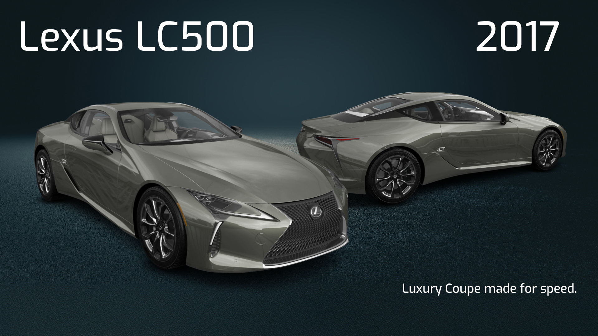

The Lexus LC (レクサス・LC, Rekusasu Eru Shī) is a grand tourer manufactured by Lexus, a luxury division of Toyota. Based on the 2012 LF-LC Concept, it was revealed at the 2016 North American International Auto Show in Detroit. It replaced the SC, which was produced from 1991 to 2010. The LC is the first Lexus model to utilize the GA-L platform, which, along with other components, is shared with the full-size XF50 series LS sedan. According to Lexus, the name "LC" stands for "Luxury Coupe".
The LC was developed under the program codename "950A" from 2011 to 2016. It was previewed by the LF-LC Concept, which was designed at Calty Design Research in Newport Beach, California. The concept vehicle was revealed at the 2012 Detroit Auto Show. Design work was later transferred from Calty to Toyota Technical Centre in Aichi, Japan in January 2013, with a final production design freeze in the first half of 2014.
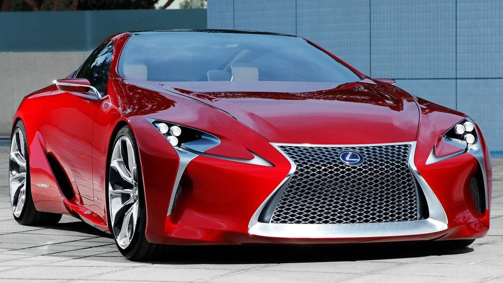
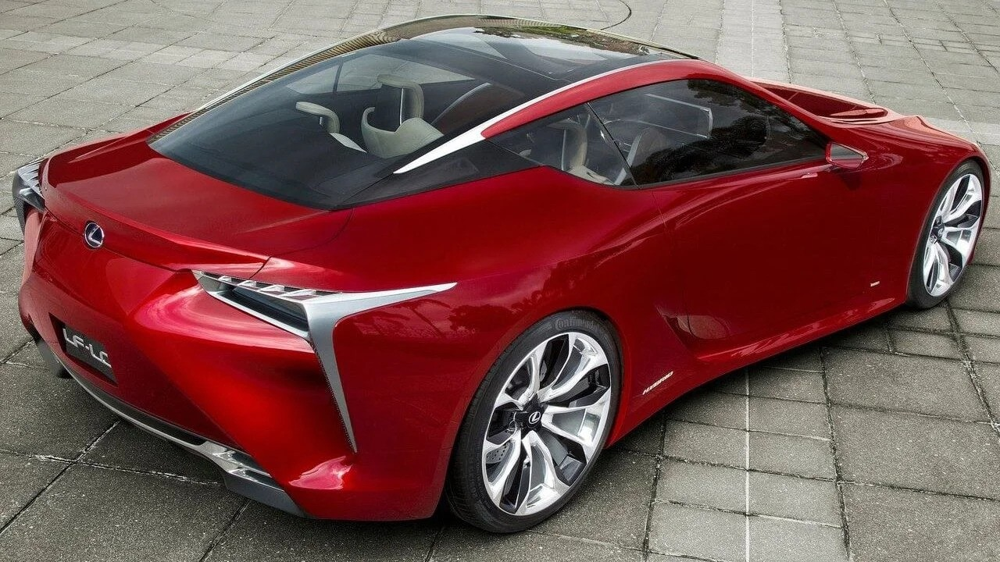
Four years after the concept's debut, the production model, dubbed LC 500, was introduced in January 2016 at the same venue. It shares the same 5.0-litre 2UR-GSE V8 engine with the RC F and GS F with power slightly increased to 351 kW; 471 hp; 478 PS. It is paired with a 10-speed automatic transmission.
The LC retained the overall design of the concept model. It has a variant of Lexus' corporate "spindle" grille with a gradient pattern; a tightly compressed mesh at the top transitions to a wider diamond at the bottom. However, unlike other vehicles in the lineup, the top of the spindle grille does not have a chrome surround. The compact LED triple-projector headlight is in the small overhang between the bumper and wheels.
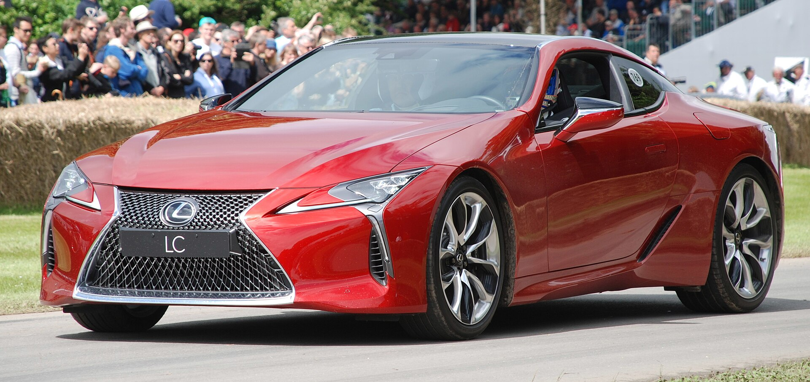
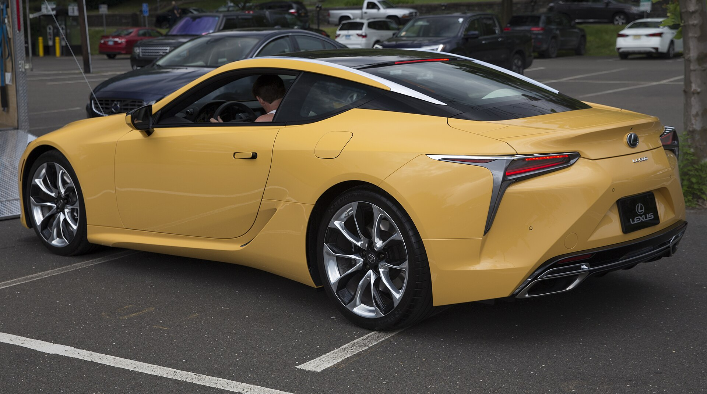
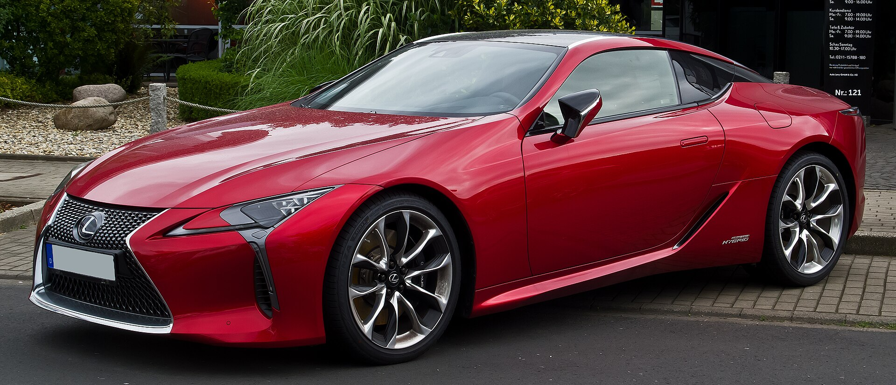
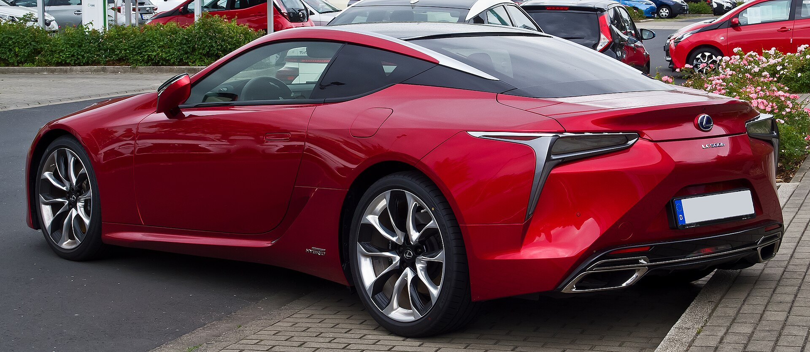
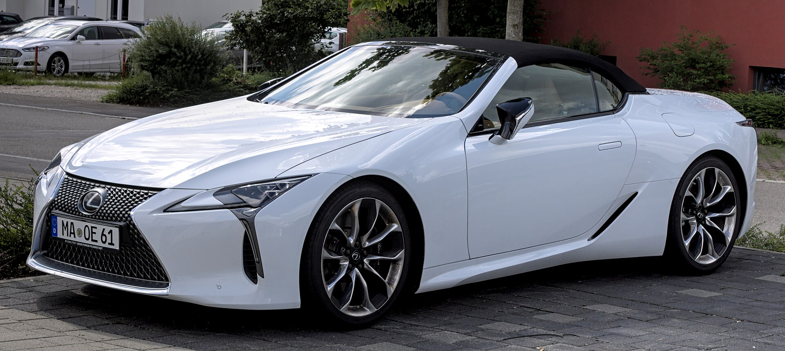
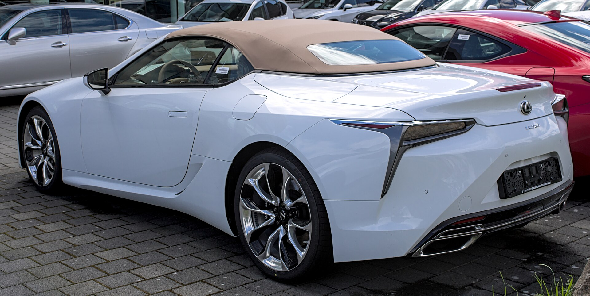
The LC500 GT500 is a GT500 GT race car derived from the road-going LC500 for use in the Super GT from 2017 onwards. The car is the direct replacement to the Lexus RC F GT500, which competed in the 2014 to 2016 Super GT seasons. The LC500 GT500 car made its début at the 2017 Okayama GT 300km, and claimed 14 race wins of the 24 overall entered races from 2017 until 2019 (26 with the Super GT/DTM crossover events). In 2020, with the introduction of the new Class One and the revival of the Supra nameplate, the Toyota GR Supra would take its place in the GT500 category.
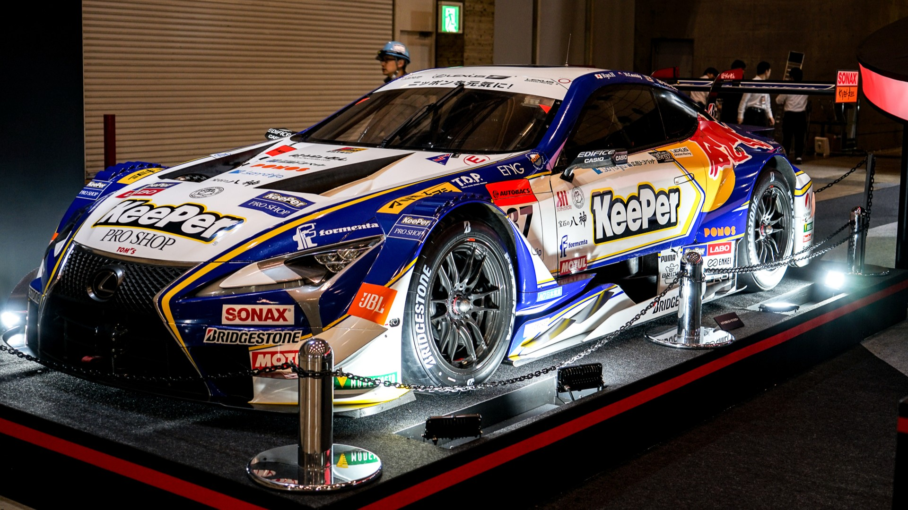
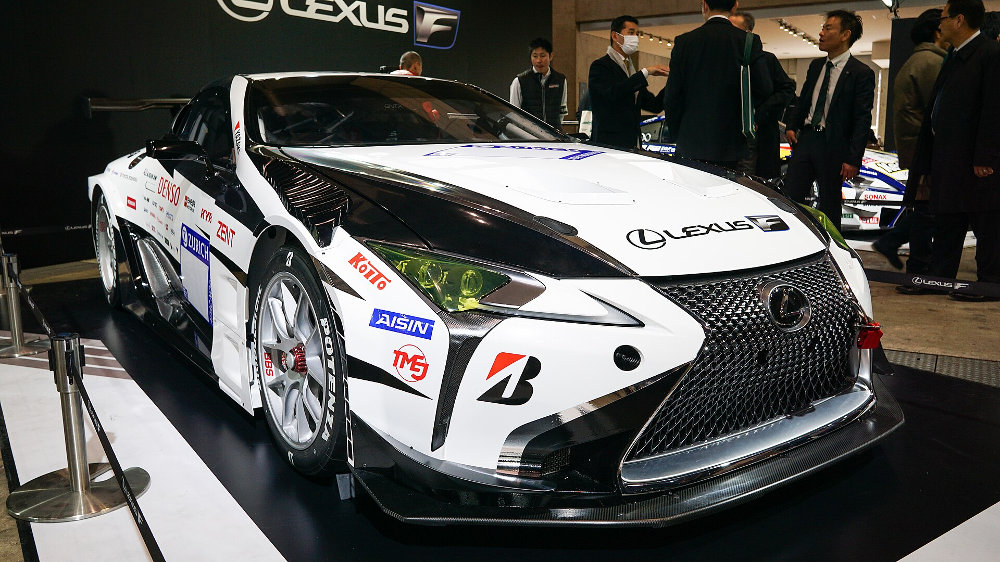
For 2023, a GT300 version of the LC500h, called the LC500h GT, was developed by APR as a replacement for their Toyota Prius GT300. The car features the same hybrid system as the Prius before it.
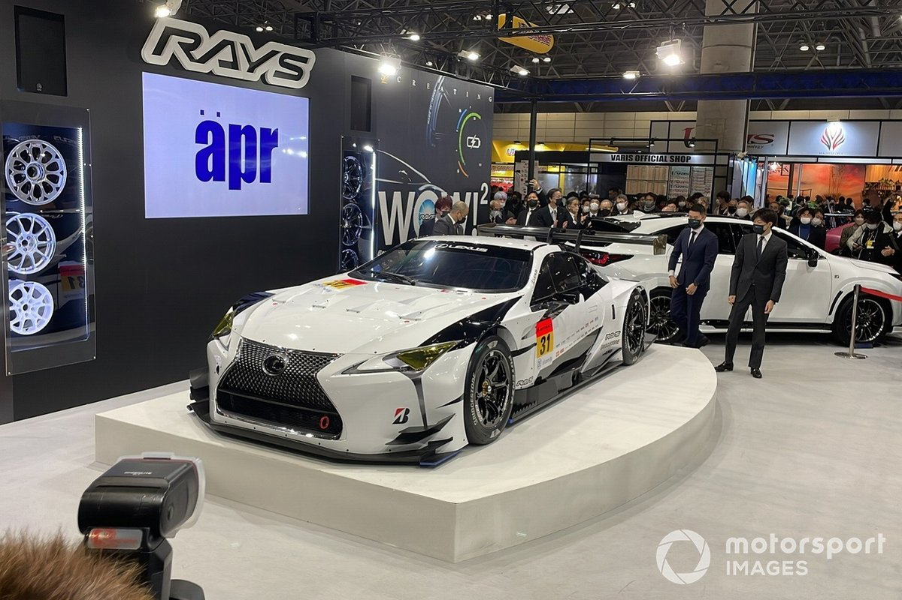
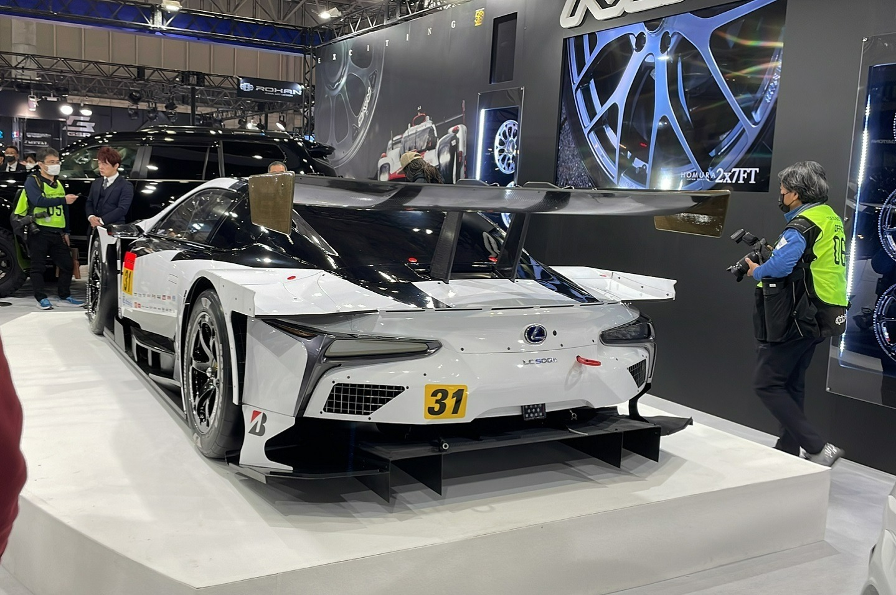